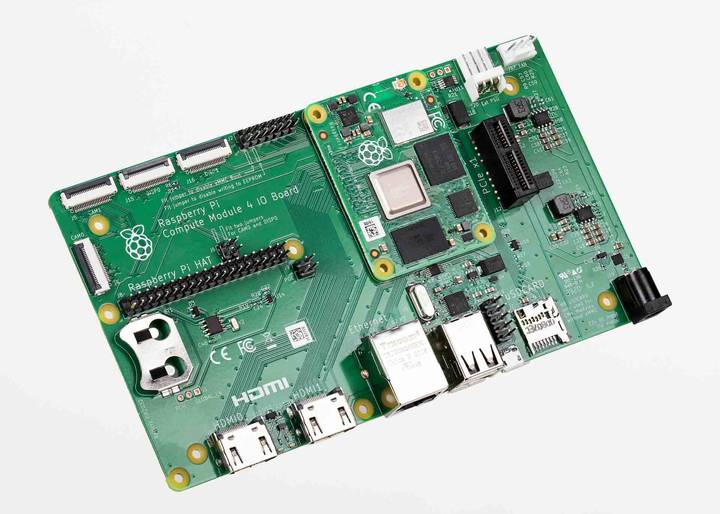

Compute Module 4 IO board

Figure 1. Compute Module 4 IO Board
The Compute Module 4 IO Board (CM4IO) provides the following:
Power and control connectors.
- 5 V through the GPIO header or 12 V input through barrel jack; supports up to 26 V if PCIe is unused.
- Real-time clock (RTC) battery socket.
Video and display connectors.
- Two HDMI connectors.
- Two MIPI DSI display FPC connectors (22-pin, 0.5 mm pitch cable).
- Two MIPI CSI-2 camera FPC connectors (22-pin, 0.5 mm pitch cable).
Networking and connectivity connectors.
- Two USB 2.0 connectors.
- A micro USB upstream port.
- A Gigabit Ethernet RJ45 with PoE support.
Expansion and storage options.
- PCIe Gen 2 socket.
- A microSD card slot (only for use with CM4Lite, which has no eMMC; other variants ignore the slot).
- HAT footprint with 40-pin GPIO connector.
- PoE header.
Configuration options.
- Jumpers to disable features such as eMMC boot, EEPROM write, and wireless connectivity.
- Selectable 1.8 V or 3.3 V GPIO voltage.
- Fan connector. Fan connector supporting standard 12 V fans with PWM drive.
Related topic: Compute Module memory, storage and wireless variants